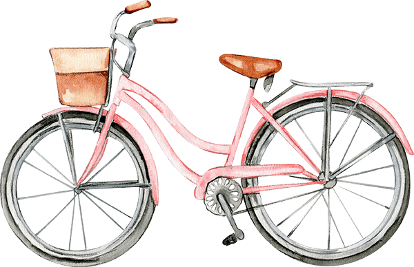
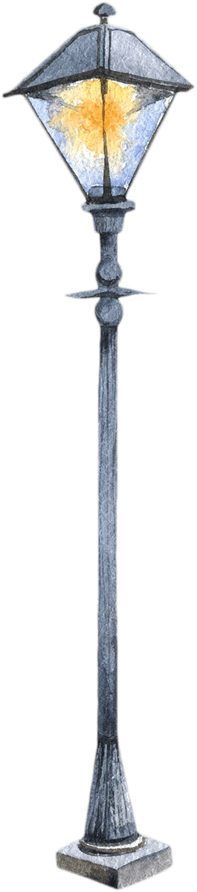

最後一哩路，3000人大調查
財務安排、預立遺囑
預立醫療決定
安寧療護註記
終活清單規劃
他們如何說再見

台灣將在2025年邁入「超高齡社會」，隨著平均壽命延長，意味著人們有更多時間安享晚年。
然而多數人只做「生涯規劃」，卻不知做「生死計畫」，面對生命必將迎來的最終旅程，你會怎麼安排餘生？
看完整文章
最後一哩路，
3000人大調查
Q1：有一天我們會離開世間，對於財產、私人擁有物、後事安排，你是否做好準備？
Q2：你認同自然死嗎？
所謂「自然死」，即是「安寧緩和醫療」，當病情進入臨終時，不特意以外力延長死亡過程（如心肺復甦術、插管等）
Q3：你簽署「拒絕心肺復甦術或維生醫療」（Do not resuscitation，DNR）了嗎？
Q4：你簽署「預立醫療決定書」（Advance Decision，AD）了嗎？
「預立醫療決定書」是一份事前表達醫療意願的文件和規劃書，在未來一旦「符合特定臨床條件」時，可以選擇「希望」或「不希望」接受維持生命治療及人工營養／流體餵養。
※特定臨床條件：包括末期病人、不可逆轉之昏迷、永久植物人狀態、極重度失智、衛福部、其他經中央疾管機關公告之疾病等5種情況。
※維持生命治療：如插管、壓胸、電擊、洗腎、抗生素等。
※人工營養／流體餵養：如靜脈注射、鼻胃管等。
有效問卷：3217份
訪問對象：全台50歲以上民眾（居住地涵蓋20縣市，各縣市佔比2.5～6.9％）
財務安排、預立遺囑
別讓你的遺產，成為家庭失和的禍根。你或許認為寫下一紙遺囑，交待財產傳承規劃，就能高枕無憂，實際上，預立遺囑的眉角，遠比你想像多，稍有不慎就會讓手足對簿公堂。
譬如常見的自書遺囑，得確保親筆手寫，沒有失智疑慮，否則，有心人仍會質疑它的效力。
如何有智慧地透露遺囑內容，給身旁家人，也能避免不必要的誤會、紛爭。善用遺囑信託條款，也能更有效管理財產，輕鬆節稅。
90歲夫妻財產遭3兒欲贈與過戶，求助律師竟被告！吳挺絹律師：如果不打算財產，就會被人打算
看完整文章

預立醫療決定
我們永遠不知道疾病、意外何時會降臨。
當我們簽下預立醫療決定書，內容會註記在健保卡，即便你因故失去意識時，決策也能受保障。依照你的意志，決定是否該做生命維持、人工營養餵食，「由你自己決定，如何走完最後一哩路」。
為何要預立醫療決定？成了病人，你很難保有醫療決定權…簽署率不到1%，問題出在哪？
看完整文章
安寧療護註記
台灣推動安寧療護多年，儘管國人多數認可這個觀念，但對於安寧仍存在許多迷思，認為安寧療護就是等死、放棄治療，甚至跟「安樂死」劃上等號。
事實上，安寧療護有多種形式，也不是只有住在醫院才能接受治療，能依病人心願選擇居家或在社區，在生命最後階段得到妥適安心的照顧。
Q1：安寧病房是等死嗎？
A：安寧病房與一般病房最大的差異，是將目標從「治癒疾病」轉向「積極的症狀控制」，並由專業團隊提供兼顧身體、心理、社會、靈性的全方位照顧。
當病況穩定後，病人可以出院，銜接安寧居家，由居家團隊定期到宅照顧。所以並非大家想像中「住進去等死」、「一路住到死」，而是讓末期病患在生命最後一程時間得到適當的照顧。
Q2：安寧療護是安樂死嗎？
A：當然不是！安樂死是透過人為「加工」且「加速」縮短生命。安寧療護則是透過專業團隊協助，讓末期病人度過最後一段有意義、有品質的生活，安適活到最後一刻，偏向「自然死」，絕不會不給予治療，而刻意結束病人生命。
Q3：住安寧病房很貴嗎？
A：目前住安寧病房的給付標準，皆按全民健保標準。如果住3人房，不必付費；如果住2人房，1天約付1000多元；住1人房則約2000多元的病房補助差額，視各開辦病房醫院收費標準而定。
醫藥費部份，如果是健保署未核准給付的藥品或治療才需付費。中低收入戶或經濟困難的病家，安寧團隊的社工師也會協助連結政府或安寧照顧基金會弱勢補助等民間資源，給予協助。
70歲癌末法師白天講經，晚上睡棺材！他「與身體和解」在家尊嚴離世…4照護模式讓末期病人安寧善終
看完整文章
臨終時子女不現身，我選擇做他「沒血緣親人」！靈性關懷陪走生命最後一哩路，讓生死兩相安
看完整文章
終活清單規劃
源自日本的終活，意指「為了人生終點而進行的準備活動」，目的在於對人生最後一哩路預作準備，消解了對死亡的不安，讓人不留遺憾與負擔的告別。
這包括整理財務狀況、預立遺囑、預做醫療決定、老後斷捨離、身後事的安排等等，但終活需要做的只有這些嗎？
算命師斷言活不過半百，她年年寫遺囑「重生」！中年後學會整理人生：勇於拒絕，活成想要的樣子
看完整文章
孤獨死現場留下一箱箱照片，兒痛哭「原來爸爸沒忘記我」…《人生清理員》：整理的不只遺物，更是人生
看完整文章
他們如何說再見
生命如同一輛列車，旅途中乘客來去去，然而到站離站，總有人要下車，面對告別，有太多不捨與牽掛，對誰來說又是容易的呢？
我們採訪了8個案例，分享他們如何說再見。也許是至親離開、痛別摯愛後，體悟放手是對方留下的生命禮物；也或許是透徹生死後，學會接納失落、珍惜當下，不讓遺憾成為羈絆彼此的枷鎖。
詩人說，離別的渡口找不到相送的花，那就致上祝福吧！願我們在離別來臨時，都能安心出發，無憾道別。
{{item.name}}
{{item.quote}}
看完整文章
{{item.name}}
{{item.quote}}
看完整文章
—— 追劇清單 ——
挑個劇吧！
{{item.quote}}
{{item.name}}
{{item.category}}
終活
清單
遺願
清單
終活該做的8件事，不留給子女麻煩
{{item.text}}
{{x}}
達成度
{{progress_value}}%
「如果明天就是下輩子，你最想做哪件事？」
——在活著時候一定要完成的願望清單
*最多選3件事
{{item.text}}
送出後即可觀看大家是怎麼想的喔!
送出
已經填寫過?
「如果明天就是下輩子，你最想做哪件事？」
——在活著時候一定要完成的願望清單
我最想做的是＿＿＿＿＿＿＿＿＿＿
{{item}}
尚未有留言
{{ num }}